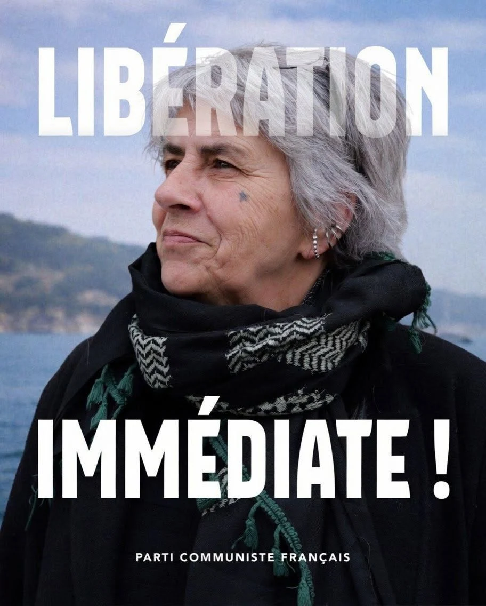

Publication relayée par le PCF 79
Igor Zamichiei demande la libération de Raphaëlle Primet
Date de mise à jour indiquée par Facebook · 30 avril 2026
Texte de la publication · Igor Zamichiei
Raphaëlle Primet, conseillère communiste de Paris, en route pour Gaza sur la flotille Sumud, ainsi que d'autres ressortissants français, ont été kidnappés cette nuit par l’armée israélienne dans les eaux internationales.
Le PCF appelle à leur libération immédiate !
Une fois encore le gouvernement de Netanyahou agit contre le droit international.
✊ Rassemblement à 18h30 ce soir Place de la République à Paris pour exiger :
➡️ La libération immédiate de Raphaëlle et des membres de la flotille
➡️ La fin du blocus de Gaza
➡️ La mise en place concrète d'un Etat de Palestine, aux côtés de l’Etat d’Israël, sur la base des frontières de 1967, avec Jérusalem-Est pour capitale, la fin de l’occupation et de la colonisation, en application du droit international.

Sources
Igor Zamichiei · publication relayée par le PCF 79 · bibliothèque Facebook · AR-0002-FB-00795
À lire aussi · Le PCF annonce le retour de Raphaëlle Primet